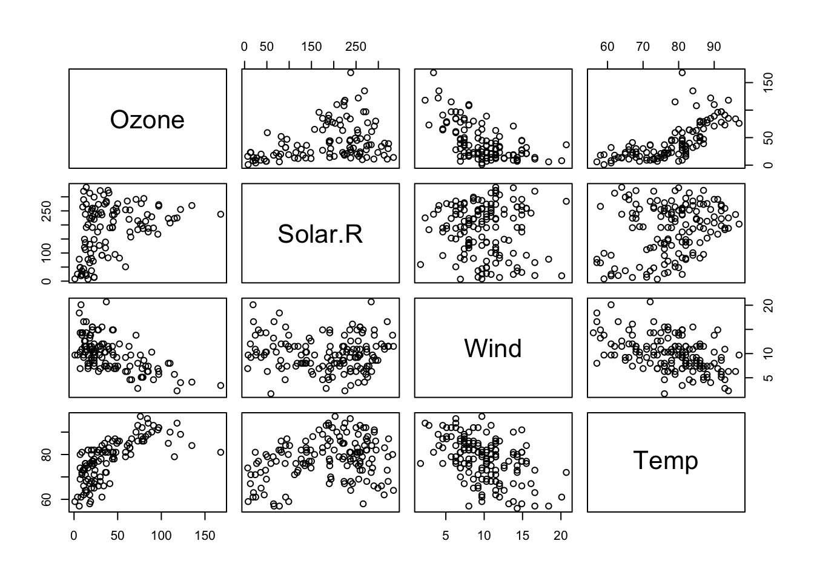
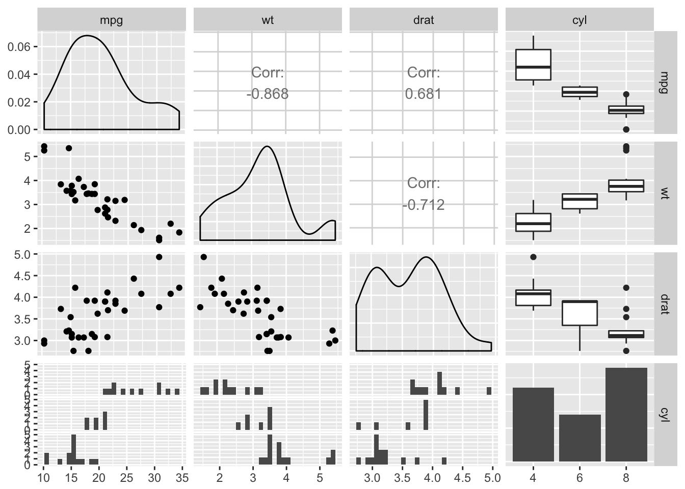

8 Correlations
The base R cor() function provides a simple way to get Pearson correlations, but to get a correlation matrix as you might expect from SPSS or Stata it’s best to use the corr.test() function in the psych package.
Before you start though, plotting the correlations might be the best way of getting to grips with the patterns of relationship in your data. A pairs plot is a nice way of doing this:
airquality %>%
select(-Month, -Day) %>%
pairs
If we were satisfied the relationships were (reasonably) linear, we could also visualise correlations themselves with a ‘corrgram’, using the corrgram library:
library("corrgram")
airquality %>%
select(-Month, -Day) %>%
corrgram(lower.panel=corrgram::panel.ellipse,
upper.panel=panel.cor,
diag.panel=panel.density)Figure 6.1: A corrgram, showing pearson correlations (above the diagonal), variable distributions (on the diagonal) and ellipses and smoothed lines of best fit (below the diagnonal). Long, narrow ellipses denote large correlations; circular ellipses indicate small correlations.
The ggpairs function from the GGally package is also a nice way of plotting relationships between a combination of categorical and continuous data - it packs a lot of information into a limited space:
mtcars %>%
mutate(cyl = factor(cyl)) %>%
select(mpg, wt, drat, cyl) %>%
GGally::ggpairs()
8.1 Obtaining a correlation matrix
The psych::corr.test() function is a quick way to obtain a pairwise correlation matrix for an entire dataset, along with p values and confidence intervals which the base R cor() function will not provide:
mycorrelations <- psych::corr.test(airquality)
mycorrelations
## Call:psych::corr.test(x = airquality)
## Correlation matrix
## Ozone Solar.R Wind Temp Month Day
## Ozone 1.00 0.35 -0.60 0.70 0.16 -0.01
## Solar.R 0.35 1.00 -0.06 0.28 -0.08 -0.15
## Wind -0.60 -0.06 1.00 -0.46 -0.18 0.03
## Temp 0.70 0.28 -0.46 1.00 0.42 -0.13
## Month 0.16 -0.08 -0.18 0.42 1.00 -0.01
## Day -0.01 -0.15 0.03 -0.13 -0.01 1.00
## Sample Size
## Ozone Solar.R Wind Temp Month Day
## Ozone 116 111 116 116 116 116
## Solar.R 111 146 146 146 146 146
## Wind 116 146 153 153 153 153
## Temp 116 146 153 153 153 153
## Month 116 146 153 153 153 153
## Day 116 146 153 153 153 153
## Probability values (Entries above the diagonal are adjusted for multiple tests.)
## Ozone Solar.R Wind Temp Month Day
## Ozone 0.00 0.00 0.00 0.00 0.56 1.00
## Solar.R 0.00 0.00 1.00 0.01 1.00 0.56
## Wind 0.00 0.50 0.00 0.00 0.25 1.00
## Temp 0.00 0.00 0.00 0.00 0.00 0.65
## Month 0.08 0.37 0.03 0.00 0.00 1.00
## Day 0.89 0.07 0.74 0.11 0.92 0.00
##
## To see confidence intervals of the correlations, print with the short=FALSE optionOne thing to be aware of is that by default corr.test() produces p values that are adjusted for multiple comparisons in the top right hand triangle (i.e. above the diagonal). If you want the uncorrected values use the values below the diagonal (or pass adjust=FALSE when calling the function).
8.2 Making correlation tables for publication
8.2.1 apaTables
If you want to produce output tables for publication the apaTables package might be useful. This block saves an APA formatted correlation table to an external Word document like this.
library(apaTables)
apa.cor.table(airquality, filename="Table1_APA.doc", show.conf.interval=F)
##
##
## Means, standard deviations, and correlations
##
##
## Variable M SD 1 2 3 4 5
## 1. Ozone 42.13 32.99
##
## 2. Solar.R 185.93 90.06 .35**
##
## 3. Wind 9.96 3.52 -.60** -.06
##
## 4. Temp 77.88 9.47 .70** .28** -.46**
##
## 5. Month 6.99 1.42 .16 -.08 -.18* .42**
##
## 6. Day 15.80 8.86 -.01 -.15 .03 -.13 -.01
##
##
## Note. * indicates p < .05; ** indicates p < .01.
## M and SD are used to represent mean and standard deviation, respectively.
## 8.2.2 By hand
If you’re not bothered about strict APA foramt, you might still want to extract the r and p values as dataframes which can then be saved to a csv and opened in excel, or converted to a table by some other means.
You can do this by storing the corr.test output in a variable, and the accessing the $r and $p values within it:
mycorrelations <- psych::corr.test(airquality)
write.csv(mycorrelations$p, file="airquality-r-values.csv")
mycorrelations$p
## Ozone Solar.R Wind Temp Month
## Ozone 0.000000e+00 0.0019724194 1.298162e-11 0.000000e+00 5.617870e-01
## Solar.R 1.793109e-04 0.0000000000 1.000000e+00 7.517729e-03 1.000000e+00
## Wind 9.272583e-13 0.4959552068 0.000000e+00 3.434076e-08 2.471060e-01
## Temp 0.000000e+00 0.0007517729 2.641597e-09 0.000000e+00 7.231443e-07
## Month 7.760010e-02 0.3663533509 2.745622e-02 6.026202e-08 0.000000e+00
## Day 8.879425e-01 0.0702233769 7.387466e-01 1.076164e-01 9.221900e-01
## Day
## Ozone 1.0000000
## Solar.R 0.5617870
## Wind 1.0000000
## Temp 0.6456986
## Month 1.0000000
## Day 0.0000000
mycorrelations$r
## Ozone Solar.R Wind Temp Month
## Ozone 1.00000000 0.34834169 -0.60154653 0.6983603 0.164519314
## Solar.R 0.34834169 1.00000000 -0.05679167 0.2758403 -0.075300764
## Wind -0.60154653 -0.05679167 1.00000000 -0.4579879 -0.178292579
## Temp 0.69836034 0.27584027 -0.45798788 1.0000000 0.420947252
## Month 0.16451931 -0.07530076 -0.17829258 0.4209473 1.000000000
## Day -0.01322565 -0.15027498 0.02718090 -0.1305932 -0.007961763
## Day
## Ozone -0.013225647
## Solar.R -0.150274979
## Wind 0.027180903
## Temp -0.130593175
## Month -0.007961763
## Day 1.000000000You can also access the CI for each pariwise correlation as a table:
mycorrelations$ci %>%
head() %>%
pander()| lower | r | upper | p | |
|---|---|---|---|---|
| Ozone-Slr.R | 0.17 | 0.35 | 0.5 | 0 |
| Ozone-Wind | -0.71 | -0.6 | -0.47 | 0 |
| Ozone-Temp | 0.59 | 0.7 | 0.78 | 0 |
| Ozone-Month | -0.018 | 0.17 | 0.34 | 0.078 |
| Ozone-Day | -0.2 | -0.013 | 0.17 | 0.89 |
| Slr.R-Wind | -0.22 | -0.057 | 0.11 | 0.5 |
8.3 Other types of correlation
By default corr.test produces Pearson correlations, but You can pass the method argument psych::corr.test():
psych::corr.test(airquality, method="spearman")
psych::corr.test(airquality, method="kendall")